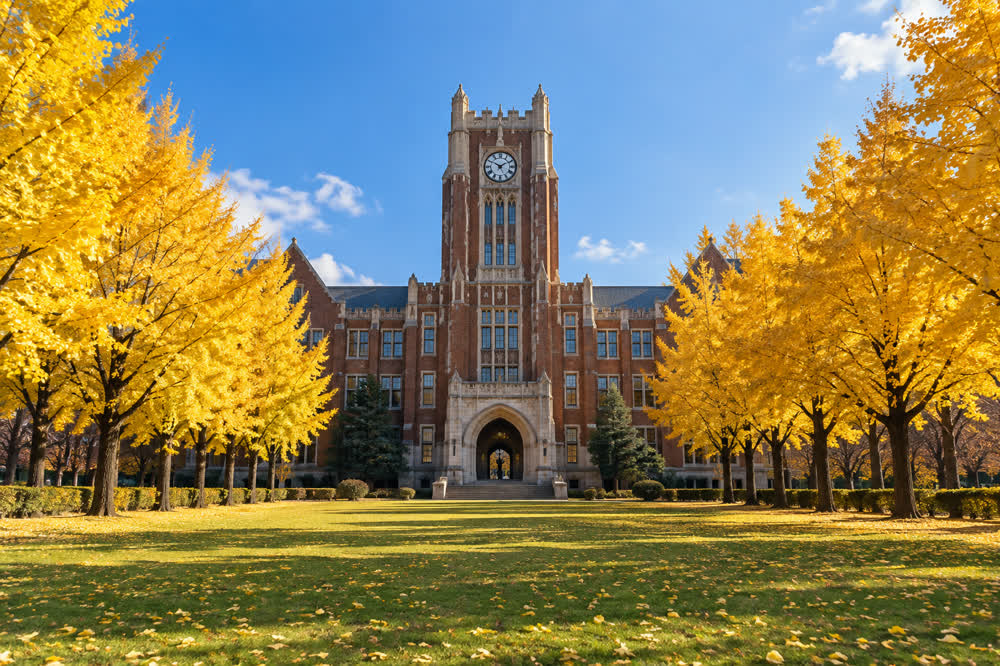
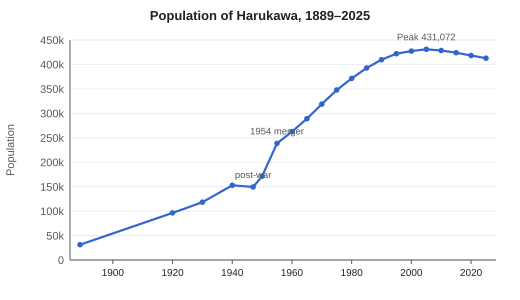

History of Harukawa
| History of Harukawa 春川市の歴史 | |
|---|---|
 The Tatsumi Turret of Harukawa Castle (1609), the oldest surviving building of the castle town | |
 Location of Harukawa in Minori Prefecture | |
| Key dates | |
| Earliest settlement | c. 3000 BCE (Uchiura Shell Mound) |
| Former name | Kagami-no-tsu (before 1603) |
| Castle town founded | 1603 |
| Domain | Harukawa Domain, 1601–1871 (Asagiri clan) |
| Prefectural capital | 1871 (Minori Prefecture) |
| City status | 1 April 1889 |
| Major merger | 1 October 1954 (four villages) |
| Core city | 1 April 1998 |
| Population | |
| 1889 | 31,200 |
| Peak (2005 census) | 431,072 |
| 2025 (estimate) | 412,800 |
The history of Harukawa covers the human settlement of the lower Kagami River and the shores of Minori Bay from the Jōmon period to the present city of Harukawa, the capital of Minori Prefecture. A fishing and harbor village called Kagami-no-tsu for most of its early history, the place became a castle town in 1603, when Asagiri Tadamasa began Harukawa Castle and gave the town its present name. It was ruled by the Asagiri clan for 270 years, became the prefectural capital in 1871 and a city on 1 April 1889, and grew in the 20th century around its port, its shipyard and the Harukawa Railway. Much of the center was destroyed in the air raid of 29 July 1945. Under Mayor Tetsuo Saeki (1951–1967) the city was rebuilt, merged with four villages and reached its present size; its population peaked at 431,072 in 2005 and stood at an estimated 412,800 in 2025.[1]
Prehistory and ancient period[edit]
The oldest known site in the city is the Uchiura Shell Mound (内浦貝塚) on the north coast of the Uchiura Peninsula, dated to about 3000 BCE. Excavations in 1934 and 1972 recovered oyster and clam shells, bone fishhooks, Jōmon pottery and the remains of pit dwellings, showing that the bay shore was settled by fishing communities more than 5,000 years ago.[1] Remains of the Yayoi period, including rice paddies, have been found on the higher parts of the Kagami delta.
In the 8th century the area belonged to Kagami District (鏡郡) of Minori Province (実野国) under the ritsuryō system. The provincial capital lay inland, and the river mouth served as a small harbor known as Kagami-no-tsu (鏡津), "the harbor of the Kagami". The river's name, meaning "mirror", is explained by its clear, still pools and by the legend of a bronze mirror lost by a princess and recovered by a fisherman; the mirror is said to be the sacred object of Kagami Shrine, which local tradition dates to the 9th century.[citation needed]
Sengoku period[edit]
From the 1400s until 1600 the region was ruled by the Uchiura clan (内浦氏), a local warrior family that took its name from the Uchiura Peninsula. Its seat was Kurayama Castle (倉山城), a mountain castle on Kurayama (683 m), which is now the highest point of the city on its northern boundary. The Uchiura controlled Kagami-no-tsu and the river trade, fought repeatedly with neighbors in the 16th century and, at the decisive battle of Sekigahara in 1600, took the side of the Western Army. After the Tokugawa victory they lost their lands.[2]
Edo period[edit]
The Asagiri and the castle town[edit]
Asagiri Tadamasa (1562–1629), the son of a minor family of Kagami District who had fought on the Tokugawa side at Sekigahara, received Minori with an assessed yield of 186,000 koku and arrived in 1601. He first lived in Kurayama Castle, but in 1603 began a new castle on a low hill beside Kagami-no-tsu. Ground was broken in the third month of Keichō 8 (spring 1603); the hill was named Sagimai, "Heron Dance", after herons that were said to have circled over it that day, and Tadamasa renamed the settlement Harukawa, "spring river", recalling, according to the clan genealogy, the river in spring flood as he had first seen it in 1601.[3] The keep was completed in 1611.[a] Kurayama Castle was abandoned in 1615 under the shogunate's one-castle-per-province law.
The castle town was laid out between 1603 and 1610. Samurai lived in Shiromachi, around the castle; merchants in Gofukumachi ("draper's town"), the main commercial street south of the castle; and fishermen and fish dealers in Uomachi near the river mouth. Potters later settled in Suyama, north-east of the town, where the clay was good. A domain census of 1721 counted 21,400 townspeople, not including samurai households.[citation needed]
Embankment, pottery and yuzu[edit]
The domain's greatest public work was the Masatsugu Embankment (正次堤), a 3.2 km levee along the river above the town, built from 1641 to 1648 under the 2nd lord, Asagiri Masatsugu. In 1624 Tadamasa had invited the potter Ōtani Sōemon from Hizen to set up a domain kiln in the castle's Ninomaru, the beginning of Harukawa ware; commercial kilns followed in Suyama from the 1680s.[b] In 1651 the 3rd lord, Tadakiyo, gave 10,000 koku to a branch family, the Uchiura Asagiri, reducing the main domain to 176,000 koku.
The Tenna famine of 1681–82 hit the domain hard. In response the 4th lord, Asagiri Tadanobu, ordered in 1688 that every farming household plant three yuzu trees, which could grow on slopes unfit for rice. The order laid the foundation of yuzu cultivation in Minori, today the third-largest in Japan, and of the yuzu flavors of the local cuisine.[4]
The Great Genbun Flood and the lantern memorial[edit]

On 4 October 1739 (Genbun 4), after three days of typhoon rain, the Kagami River overtopped the Masatsugu Embankment and flooded the lower castle town. The Great Genbun Flood killed about 1,140 people, most of them in the fishing quarter of Uomachi and the low ground of Shiomi, and destroyed much of the rice harvest.[5] The 5th lord, Masayoshi, died the following year. In 1740 his successor, Asagiri Tadatoki, ordered a memorial service in which lanterns were floated on the river for the dead. The memorial was repeated every year on the anniversary of the flood and grew into the Harukawa Lantern Festival. After the flood the Masatsugu Embankment was raised and lengthened. The disaster and the first memorial are the subject of Michiyo Tōno's novel The River Mirror (1956).
Fire, reform and the end of the domain[edit]
On 15 June 1749 lightning struck the castle keep, which burned down. Tadatoki rebuilt it between 1752 and 1755, partly with a levy on the merchants of Gofukumachi, and the Sagimai Gate was rebuilt in 1757. The cost burdened the domain for decades.[3]
The 8th lord, Asagiri Masahiro, founded the domain school, the Shūkōkan (修好館), in 1803. It taught Confucian classics, medicine and, from the 1840s, Western gunnery. The Ansei earthquake of December 1854 damaged the castle's north walls and houses in the town; the walls were repaired in 1856. A cholera epidemic forced the cancellation of the lantern memorial in 1863. In the Boshin War of 1868 the domain, under its 11th and last lord Asagiri Tadanori, sided with the new Meiji government.
Meiji period to 1945[edit]
Prefectural capital and city[edit]
The domains were abolished in 1871. Harukawa Domain became Harukawa Prefecture in the summer, and on 14 November 1871 it was merged with two smaller prefectures, including Uchiura Prefecture, the former branch domain, to form Minori Prefecture (実野県), with Harukawa as its capital.[6] In 1874 the castle buildings were sold and the keep was demolished; only the Tatsumi Turret and the Sagimai Gate were kept. The same year Minori Normal School was founded. Oyster farming began in Minori Bay in 1878, and the newspaper Harukawa Nippō was founded in 1888.
On 1 April 1889, when the municipal system came into force, Harukawa became one of Japan's first cities, with 31,200 inhabitants. Minori Bank was founded in 1897. In 1910 the Lantern Festival was fixed to October in the solar calendar, and in 1911 the confectioner Kikuya of Gofukumachi created the lantern-shaped tōrō manjū. The potter Kawabe Shūzan began the revival of Harukawa ware in 1919.
The Kagami Valley Railway (鏡谷鉄道) was founded in 1923 and, under its chief engineer Kenzō Hattori, opened the first section of the Kagami Line, from Harukawa to Kamano, on 15 July 1926. The line reached Tsukimi Onsen on 4 October 1931, opening the hot springs of Tsukimi Onsen to visitors from the city. Minori Higher Commercial School was founded in 1923 and moved into its red-brick main building in 1931. The Kagami Bridge opened on 20 March 1932. A flood in 1934 again inundated the lower town.[7]
Industry and war[edit]


The Harukawa Shipyard opened on the bay in 1937. With the shipyard and the war economy the population passed 150,000 by 1940. Suyama village was merged into the city on 1 April 1942, and Harukawa Medical College was founded in 1943. The Lantern Festival was suspended from 1944.
On the night of 29 July 1945, an air raid burned 38 % of the urban area and killed 1,072 people. Uomachi, the station area and much of Gofukumachi were destroyed, as were buildings in the Sannomaru of the castle; the Tatsumi Turret, the Sagimai Gate and the Kagami Bridge survived.[8] At the census of 1947 the city had 149,310 inhabitants, fewer than in 1940.
Postwar period[edit]
Reconstruction[edit]
The Lantern Festival was revived in October 1947 at the initiative of the deputy mayor, Tetsuo Saeki, a former prefectural civil engineer, and was seen as a memorial for the dead of 1945 as well as of 1739. Saeki also drew up the reconstruction plan, whose centerpiece was the 50 m wide Sagimai Avenue (鷺舞通り), built between 1949 and 1958 from the station square past the castle and designed as a firebreak as well as a main street.[9] Harukawa University was founded on 31 May 1949 by merging the Higher Commercial School, the Normal School and the Medical College.
Saeki was elected mayor in April 1951 and served four terms, to 1967. The university opened its Sagimai Campus in 1951, the year the Kagami Valley Railway took its present name, Harukawa Railway; the Kagami Line was electrified in 1952 and the first Kamano Pottery Fair was held the same year. On 1 October 1954 the city merged with the four villages of Kawamata, Ichinose, Uchiura and Sakurahama, which raised its population from 171,346 (1950) to 238,517 (1955). The Uomachi central fish market opened in 1956, and the Tsukimi–Kagami Prefectural Natural Park was designated in 1959.
Reclamation and the keep[edit]
The Bayside Line opened along the bay to Minori Port on 1 October 1962, for passengers and freight, and Harukawa Station was renamed Harukawa Central the same day. Between 1961 and 1966 the city and the prefecture reclaimed 2.4 km² of Minori Bay for the expansion of the shipyard. The oyster fishermen of the bay opposed the project; their 1965 lawsuit was settled in 1968 with compensation of ¥380 million. The castle keep, rebuilt in reinforced concrete with the help of a citizens' donation campaign, opened on 3 November 1966, and the Asagiri family gave about 2,300 documents to its museum.[9]
1970s and 1980s[edit]
1971, the centenary of the prefecture, brought three changes: the prefecture's name was changed on 1 April to the hiragana form みのり県, because the characters 実野 were often misread; Minori Airport opened 22 km south-west of the city; and the Ōkubo Dam on the upper Kagami River was completed. Harukawa ware was designated a Traditional Craft by the national government in 1979, the Minori Prefectural Museum of Art opened in the castle's Sannomaru in 1983, and the potter Hanae Ishizuka was named a Living National Treasure in 1985. On 14 May 1987 Harukawa became a sister city of Kellbridge, a pottery town in Staffordshire, England, and the same year the limited express Tsukikage began running to Tsukimi Onsen. The eight-volume Harukawa City History was completed in 1989, the year the city founded the Michiyo Tōno Literary Prize.
Since 1990[edit]

Harukawa ware production peaked in 1991 at ¥4.6 billion from 71 kilns. Minori Prefectural University opened in 1992, and the Minori Bay Aquarium in 1997. On 1 April 1998 Harukawa became a core city, gaining powers normally held by the prefecture; the same year the Harukawa Nippō launched its English edition, The Harukawa Herald, and the Bayside Line was elevated between Harukawa Central and Shinkō-dōri. Since 2000 the Lantern Festival has been held on the second weekend of October.
A typhoon in September 2004 brought a record daily rainfall of 287.0 mm on 19 September and flooded low-lying districts along the river. The 2005 census recorded the city's highest population, 431,072; it has declined at every census since, to 418,316 in 2020, as the population ages (30.4 % were 65 or older in 2025).[10] The new Harukawa Central Station building opened on 26 March 2011, and the HaruCa IC card was introduced in 2012. The Suyama Old Kiln was designated a National Historic Site on 4 October 2015.
Takuya Hirose, a city official for 28 years, was elected mayor as an independent in November 2018 and re-elected in 2022; he is seeking a third term at the election of 8 November 2026. The castle keep closed for a seismic retrofit in 2019, and the 8000 series trains entered service on the Tsukikage the same year. The COVID-19 pandemic cut tourist visitors from 6.1 million in 2019 to 2.9 million in 2020, when the Lantern Festival was cancelled for the first time since the war. The keep reopened on 1 April 2023, and visitors reached a record 6.5 million in 2025. The prefecture estimated the population at 412,800 on 1 October 2025.[d] The 2026 Lantern Festival, on 10–11 October, is counted as the 282nd by the festival committee.[c]
Population[edit]


The population grew from 31,200 in 1889 to more than 150,000 by 1940, fell during the war, and rose sharply after the 1954 merger and with postwar industrial growth. Growth slowed in the 1990s, and the city has been losing population since the 2005 peak.[10]
| Year | Population | Notes |
|---|---|---|
| 1889 | 31,200 | City status |
| 1920 | 96,412 | First national census |
| 1940 | 152,884 | Growth of the shipyard and port |
| 1947 | 149,310 | After the 1945 air raid |
| 1950 | 171,346 | Postwar recovery |
| 1955 | 238,517 | After the 1954 merger |
| 1970 | 318,946 | High economic growth |
| 1990 | 409,788 | Growth slows |
| 2005 | 431,072 | Peak |
| 2020 | 418,316 | Latest census |
| 2025 | 412,800 | Prefectural estimate, 1 October |
Timeline[edit]
| Year | Event |
|---|---|
| c. 3000 BCE | Jōmon fishing settlement at the Uchiura Shell Mound |
| 8th century | Area forms Kagami District of Minori Province; harbor of Kagami-no-tsu |
| 1400s | Uchiura clan rules from Kurayama Castle |
| 1600 | Battle of Sekigahara; the Uchiura lose their lands; Asagiri Tadamasa receives Minori (186,000 koku) |
| 1601 | Tadamasa arrives in Minori |
| 1603 | Harukawa Castle begun; town renamed Harukawa; castle town laid out (to 1610) |
| 1609 | Tatsumi Turret built |
| 1611 | Castle keep completed (1612 in some sources) |
| 1615 | Kurayama Castle abandoned |
| 1624 | Domain kiln founded in the castle (origin of Harukawa ware) |
| 1641–1648 | Masatsugu Embankment built |
| 1651 | 10,000 koku given to the Uchiura Asagiri branch family |
| 1681–1682 | Tenna famine |
| 1688 | 4th lord Tadanobu orders yuzu planting |
| 1739 | Great Genbun Flood (4 October), about 1,140 dead |
| 1740 | First lantern memorial on the river |
| 1749 | Lightning fire destroys the keep (15 June) |
| 1752–1755 | Keep rebuilt |
| 1757 | Sagimai Gate rebuilt |
| 1803 | Domain school Shūkōkan founded |
| 1854 | Ansei earthquake damages the castle walls |
| 1863 | Lantern memorial cancelled (cholera) |
| 1868 | Domain sides with the new government in the Boshin War |
| 1871 | Domain abolished; Minori Prefecture formed (14 November), capital Harukawa |
| 1874 | Castle buildings sold, keep demolished; Minori Normal School founded |
| 1878 | Oyster farming begins in Minori Bay |
| 1888 | Harukawa Nippō founded |
| 1889 | City status (1 April) |
| 1897 | Minori Bank founded |
| 1910 | Lantern Festival fixed to October |
| 1919 | Kawabe Shūzan begins the revival of Harukawa ware |
| 1923 | Minori Higher Commercial School founded; Kagami Valley Railway founded |
| 1926 | Kagami Line opens Harukawa–Kamano (15 July) |
| 1931 | Kagami Line reaches Tsukimi Onsen (4 October) |
| 1932 | Kagami Bridge opens (20 March) |
| 1934 | Kagami River flood |
| 1937 | Harukawa Shipyard opens |
| 1942 | Suyama village merged (1 April) |
| 1945 | Air raid (29 July): 38 % of the urban area burned, 1,072 dead |
| 1947 | Lantern Festival revived |
| 1949 | Harukawa University founded (31 May); Sagimai Avenue begun |
| 1951 | Tetsuo Saeki elected mayor; Tatsumi Turret and Sagimai Gate designated Important Cultural Properties; Kagami Valley Railway renamed Harukawa Railway |
| 1952 | Kagami Line electrified; first Kamano Pottery Fair |
| 1953 | Castle site designated a National Historic Site |
| 1954 | Merger with Kawamata, Ichinose, Uchiura and Sakurahama (1 October) |
| 1958 | Sagimai Avenue completed; Sagimai Kiln site excavated |
| 1961–1966 | Reclamation of 2.4 km² of Minori Bay for the shipyard |
| 1962 | Bayside Line opens to Minori Port; Harukawa Station renamed Harukawa Central (1 October) |
| 1966 | Castle keep reconstructed (opened 3 November) |
| 1968 | Reclamation lawsuit settled (¥380 million) |
| 1971 | Prefecture renamed みのり県; Minori Airport opens; Ōkubo Dam completed |
| 1979 | Harukawa ware designated a Traditional Craft |
| 1983 | Minori Prefectural Museum of Art opens (3 November) |
| 1985 | Hanae Ishizuka named a Living National Treasure |
| 1987 | Sister city agreement with Kellbridge (14 May); limited express Tsukikage introduced |
| 1989 | Harukawa City History completed; Michiyo Tōno Literary Prize founded |
| 1991 | Harukawa ware output peaks (¥4.6 billion) |
| 1997 | Minori Bay Aquarium opens |
| 1998 | Core city status (1 April); The Harukawa Herald launched; Bayside Line elevated |
| 2004 | Typhoon flood; record daily rainfall of 287.0 mm (19 September) |
| 2005 | Population peaks at 431,072 (census) |
| 2011 | New Harukawa Central Station building opens (26 March) |
| 2012 | HaruCa IC card introduced |
| 2015 | Suyama Old Kiln designated a National Historic Site (4 October) |
| 2018 | Takuya Hirose elected mayor (November) |
| 2019 | Keep closed for retrofit; Tsukikage 8000 series introduced |
| 2020 | Lantern Festival cancelled (pandemic); visitors fall to 2.9 million |
| 2023 | Keep reopens (1 April) |
| 2025 | Record 6.5 million visitors; population estimate 412,800 |
See also[edit]
- Harukawa
- Harukawa Castle
- Asagiri clan
- Tetsuo Saeki
- Harukawa Lantern Festival
- Kagami River
- Minori Prefecture
Notes[edit]
- ^ Some sources give 1612, the year in which the gilded roof ornaments (shachihoko) and the last fittings of the keep were installed. Domain records and the city use 1611.
- ^ The Suyama Kiln Association dates the beginning of pottery in Harukawa to 1616, from a shard inscribed "Genna 2". Most historians believe the shard comes from an earlier, unrelated kiln and date Harukawa ware from the domain kiln of 1624.
- ^ The festival committee counts the scaled-down 2021 festival, held without floating lanterns, and calls the 2026 festival the 282nd. The Harukawa Nippō counts only full editions and calls it the 281st.
- ^ The city's own resident register counted 409,962 residents on 1 September 2026. The prefectural figure of 412,800 is an estimate updated from the 2020 census, while the register counts registered residents; the two methods give different results.
References[edit]
- ^ a b Harukawa City History Compilation Committee (1989). Harukawa City History (春川市史), vol. 1: Ancient and Medieval. Harukawa City, pp. 3–12.
- ^ Hirota Masaki (2009). The Asagiri Lords of Harukawa, 1601–1871. Sōrinsha, pp. 14–35.
- ^ a b Harukawa City History Compilation Committee (1989). Harukawa City History, vol. 2: Early Modern I. Harukawa City, pp. 41–96.
- ^ Minori Prefectural Fruit Tree Experiment Station (2012). A History of Yuzu in Minori. Minori Prefecture, pp. 8–15.
- ^ Ishikawa Ryūji (1999). Floods of the Kagami River, 1600–2000. Minori Local History Society, pp. 33–51.
- ^ Harukawa City History Compilation Committee (1989). Harukawa City History, vol. 4: Modern. Harukawa City, pp. 12–30, 211–240.
- ^ Harukawa Railway (2023). One Hundred Years of HaruTetsu. Harukawa Railway Co., pp. 22–61.
- ^ Harukawa City (1950). Record of War Damage in Harukawa. Harukawa City, pp. 7–19.
- ^ a b Nakagawa Fumio (1994). Tetsuo Saeki and the Rebuilding of Harukawa. Harukawa Nippō Press, pp. 45–78.
- ^ a b Minori Prefecture Statistics Division (2026). Population Estimates of Minori Prefecture, 1 October 2025. Minori Prefecture, p. 4.
Further reading[edit]
- Harukawa City History Compilation Committee (1989). Harukawa City History, 8 vols. Harukawa City.
- Okada Shin'ichi (2015). Castle Towns of the Inland Provinces. Sōrinsha.